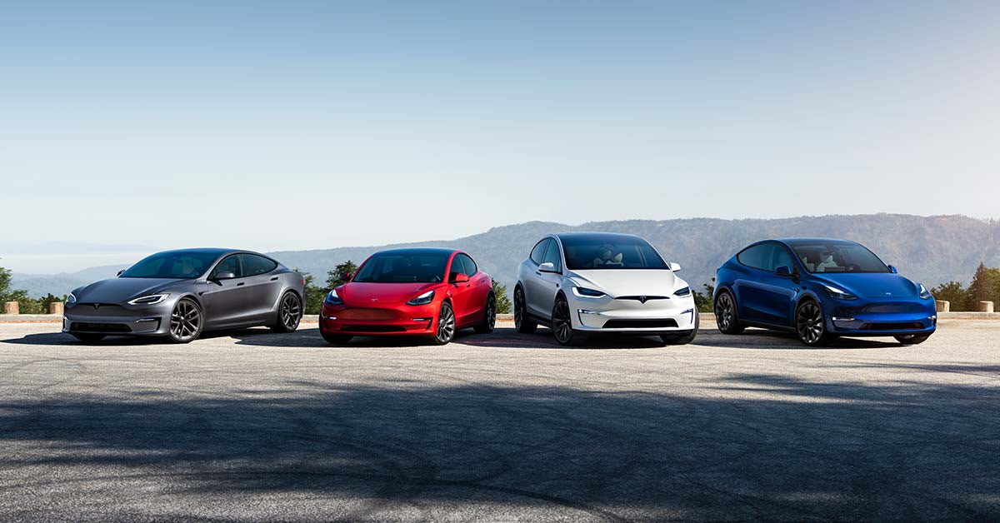

Vote at the 2023 Tesla Shareholder Meeting →
ir.tesla.com
Tesla Investor Relations
Tesla's mission is to accelerate the world's transition to Sustainable energy. Today, Tesla builds not only all electric vehicles but also ...
Tesla’s Elon Musk has his “mojo” back: longtime $TSLA bull teslarati.com/teslas-elon-mu... by @ResidentSponge
teslarati.com
Tesla’s Elon Musk has his “mojo” back: longtime TSLA bull
Tesla bulls who have grown more cautious about the stock amid Elon Musk's focus on Twitter have become more optimistic ...